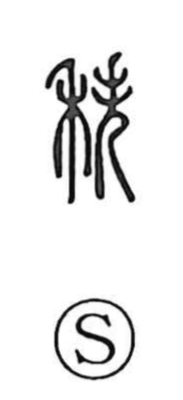

秩

Kun: | On: chitsu
order ・ rank ・ sequence
Explanation
Shirakawa explains 秩 as a phono-semantic character: the right-side 失 serves as the phonetic element that marks the on reading (as in 帙), while the character as a whole evokes things stacked in neat rows. The Shuowen glosses it as “a piled-up form,” and the Book of Odes line 積之秩秩 vividly portrays sheaves set up tightly without gaps. From this image of regular piling came the senses of orderly arrangement and correct sequence, and by extension the order of rank in public office—hence terms like chitsuroku and chitsuho for stipends determined by rank.